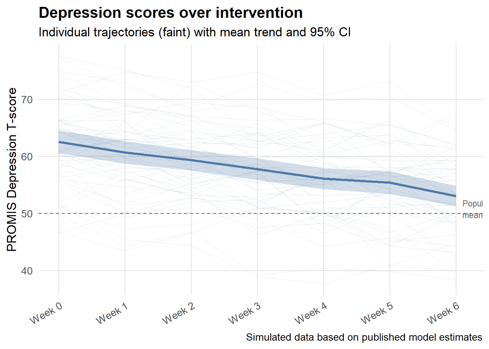
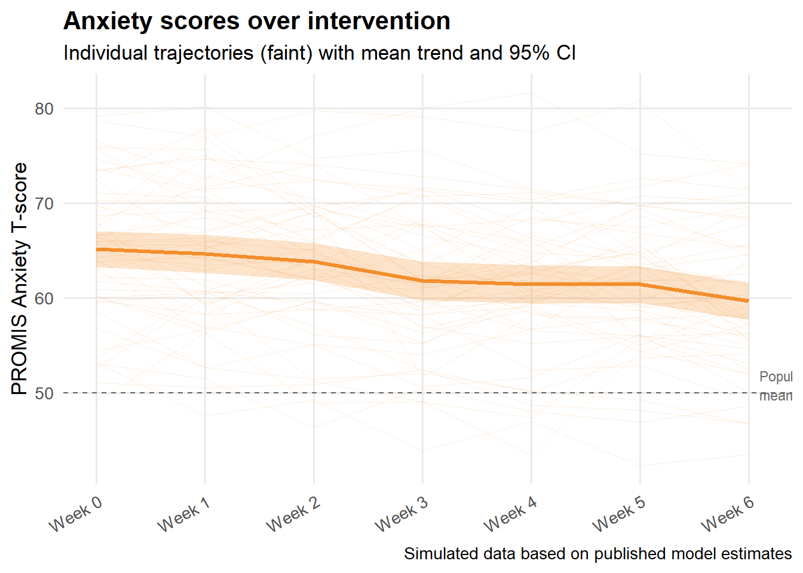

May 19, 2026
This project originated through consulting work with the Master’s in Statistical Practice (MSSP) program at Boston University, where I served as a PhD Senior Consultant. In this role I led teams of 5 Master’s students from client intake through modeling decisions, final write-ups, and presentations. This work resulted in a peer-reviewed publication in the American Journal of Occupational Therapy (Holmes et al., 2023)
I was brought on as a lead statistician for a project designed to evaluate an online educational course for autistic individuals as an intervention towards depression and anxiety. The course, called Healthy Relationships on the Autism Spectrum (HEARTS), involved six 90-minute online class sessions in which participants learned about topics related to healthy relationships (such as setting boundaries or what constitutes a healthy versus unhealthy relationship). After each class participants filled out a questionnaire: using items rated on a 5-point Likert scale, raw scores are converted to two \(t\)-scores (one related to anxiety and the other depression) with a mean of 50 and standard deviation of 10.
Individuals were assessed at six different time points. A standard approach in this setting is to use a longitudinal mixed-effects model. The mixed model accounts for similarity between measurements taken by the same individual by modeling both variation between individuals and within. A linear slope term is included by week, allowing inference as to whether the slope of week is negative.
A simple alternative would be to run paired \(t\)-tests on the endpoints of the timeframe, but this can reduce power, and does not handle participant drop-outs gracefully.
To avoid privacy concerns the data visualized in this post are synthetic. Trend lines with effects and errors similar to the study are visualized below – despite variation between individuals, overall, anxiety and depression improved according to these scales. In the next sections I discuss some limitations and statistical concerns.


Fixed-effect estimates from both models are shown below, closely reproducing the published results.
| Depression | Anxiety | |
|---|---|---|
| 95% confidence intervals in brackets. Simulated data based on published model estimates. | ||
| Intercept | 62.355 | 65.259 |
| [60.499, 64.210] | [63.348, 67.170] | |
| Week | -1.511 | -0.905 |
| [-1.670, -1.351] | [-1.096, -0.713] | |
| SD (Intercept id) | 6.697 | 6.931 |
| SD (week id) | 0.212 | 0.471 |
| Cor (Intercept~week id) | -0.388 | -0.191 |
| SD (Observations) | 2.978 | 2.897 |
| Num.Obs. | 385 | 385 |
Of the 98 people enrolled, only 55 were eligible for analysis (consenting and meeting minimum participation criterion). This criterion included participating in four or more of the sessions.
One limitation of the study is that it is possible that there is a relationship between participants dropping out or attending few sessions and the outcome — heightened anxiety, depression, emotional burnout, or hospital stays are all plausible reasons someone might withdraw. Although mixed-effects models handle missing-at-random data gracefully, this assumption may be questionable here. If I were repeating the study, I would have conducted additional sensitivity analyses and assessed the plausibility of the MAR assumption using visualizations.
A relevant consideration is whether statistically significant effects are also clinically meaningful. Based on a literature review, the authors determined that a change of 1.5 to 3.7 points on the PROMIS Depression scale and 2.3 to 3.5 points on the PROMIS Anxiety scale constitutes a minimal important change (MIC) — the smallest within-person difference that patients themselves would consider meaningful.
The mixed-effects model estimated improvements of 1.39 points per week for depression and 0.99 points per week for anxiety, accumulating to approximately 8.3 and 5.9 points respectively over 6 weeks — well above both MIC thresholds. So while the study is limited by its lack of a control group, the magnitude of change observed is not merely a statistical artifact of a large sample; it clears a clinically grounded bar.
The results of this pilot study were promising. Both depression and anxiety scores declined meaningfully over the six-week intervention, with effect sizes exceeding the minimal important change thresholds established in the literature. The use of a longitudinal mixed-effects model was appropriate given the repeated-measures structure of the data and the presence of participant dropout.
That said, the study has real limitations worth acknowledging. Without a control group, changes in scores cannot be attributed to HEARTS specifically — regression to the mean, the social benefits of group participation, or concurrent therapies could all contribute. The missing-at-random assumption embedded in the mixed-effects approach is also potentially violated given the reasons participants dropped out. These are limitations the authors note briefly but do not fully address statistically.
As a pilot study, however, HEARTS achieved what it set out to do: demonstrate feasibility, signal a clinically meaningful effect, and make the case for a larger randomized controlled trial.